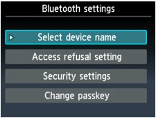
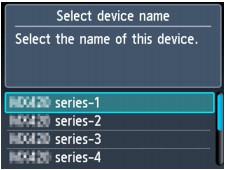
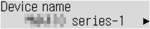

This section describes the procedures for checking the settings of the Bluetooth unit on the LCD of the printer in preparation for Bluetooth printing.
Canon IJ printers with the Bluetooth interface are divided into two types. One is equipped with a graphic LCD, and the other with a text LCD.
If you need more information about the Bluetooth settings, see Setting Bluetooth Printing.
-
Make sure that the Bluetooth unit is attached and the printer is turned on.
For information about how to attach the Bluetooth unit, see Attaching to and Removing from the Printer.
-
Display the Bluetooth settings screen on the LCD.
For information about how to display the Bluetooth settings screen, refer to Changing the Machine Settings on the LCD.
- Graphic LCD
- Text LCD
-
If the Bluetooth settings screen is not displayed on the LCD, the Bluetooth unit may not be attached correctly. Remove the Bluetooth unit from the printer and attach it once again.
For details, see Attaching to and Removing from the Printer.
If the Bluetooth settings screen is not yet displayed, the Bluetooth unit may be faulty. In this case, contact the service center.
 Note
Note -
Select Select device name/Device name.
The Select device name/Device name screen is displayed.
- Graphic LCD
- Text LCD
 -
Check the device name.
The device name is necessary to register the printer as a Bluetooth device. Be sure to note the device name.
Note-
If multiple printer units with the same model name are connected to the system, assigning a different device name to each printer is recommended for easy identification of the printer you will use. See Bluetooth settings Screen.
After checking the device name, use the OK button on the printer to finish setting.
After checking the Bluetooth settings using the LCD, register the printer on your computer.
-